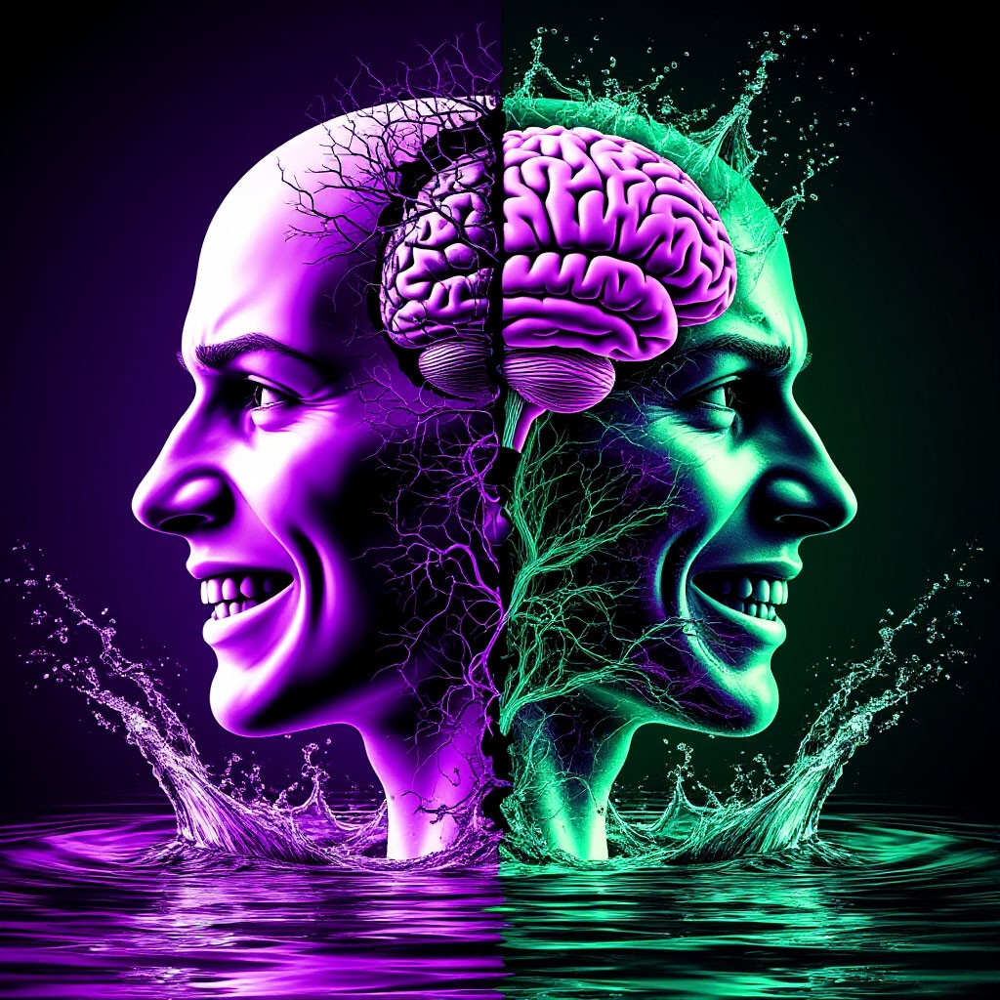
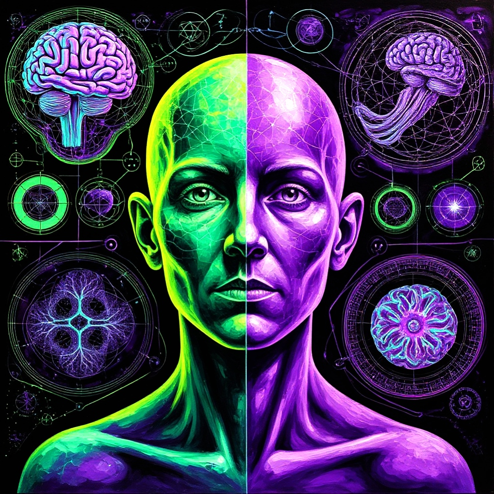

БЕЗ ВОДЫ!
«Никакого токсичного позитива и пустых советов»!
Никаких «просто дыши» или «возьми себя в руки»!
Только конкретные, рабочие методы — без философских рассуждений!
Чёткие инструкции: что делать, когда кипит мозг или прогибаешься под других.

НАУЧНО!
«Проверено нейрофизиологами, а не гуру мотивации»
Техники на основе КПТ, гештальт-терапии и исследований гнева.
Объясняем, почему злость — это нормально (и даже полезно)!
Разбираем, как работает мозг в ярости — без мифов!
ПРАКТИЧНО!
«Не надо ждать годами — работаем здесь и сейчас»!
Упражнения, которые дадут результат после первой недели!
Чек-листы, дневники, шаблоны фраз — бери и применяй!
Тесты для самодиагностики: «Ты взрываешься или копишь?».
ЧЕСТНО!
«Правда, даже если она бесит»!
Никаких сладких обещаний вроде «Вы успокоитесь за 1 день»!
Говорим прямо: гнев — не враг, а топливо для действий!
Разоблачаем популярные мифы (например, что «добрые люди счастливее» — это ложь)!